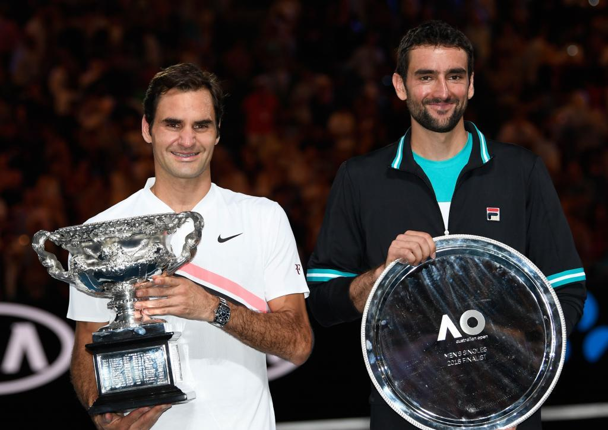
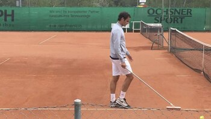
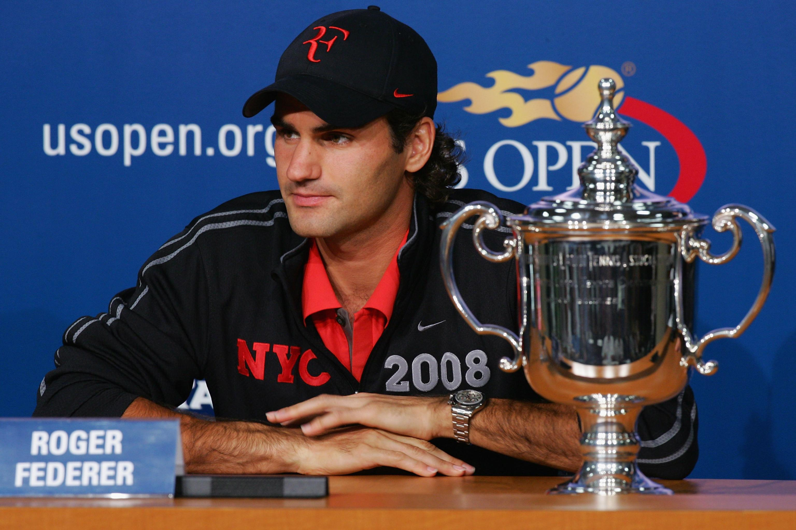
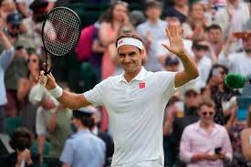

Roger Federer
☰
Inicio
Biografía
Carrera
Estadísticas
Galería
Galería de Imágenes
Disfruta de algunos de los momentos más memorables de la carrera de Roger Federer:
Wimbledon 2017

Australian Open 2018

Entrenamiento

Ganador del US Open

Saludo al público